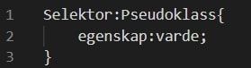
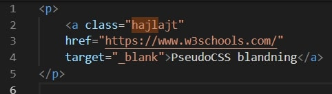
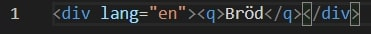
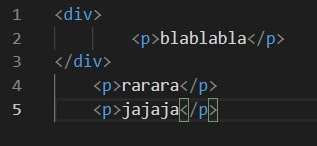

Pseudoklasser används för att definiera speciella tillstånd av ett element. Till exempel att formge ett element när användaren rör musen över det, att formge besökta och obesökta länkar olika och att formge ett element när det får fokus. [1]

Exempel på hur en syntax för en pseudoklass ser ut.
Här följer några exempel på Pseudoklasser.
Ankarpseudoklasserna bidrar med speciella effekter till ankarelementen i HTML. Ankarpseudoklasserna representerar tillståndet
för länkarna som obesökta, besökta, eller för närvarande vald. Ankarpseudoklasserna tillåter dig även att aktivera HTML-elementen
eller att applicera en specifik stil till ett element när muspekaren pekar över den. [2]
Ankarpseudoklasserna är följande
a:link. Som applicerar stilar på icke-besökta länkarna.
a:visited. Som applicerar stilar till besökta länkar
a:hover. Som applicerar stilar till ett element över där muspekaren rör sig.
a:active. Som applicerar stilar till ett aktivt element.
a:focus. Som applicerar stilar till ett element under den period som den har användarfokus.
Pseudoklasser kan även kombineras med CSS-klasser. [1]

Så här kan en blandning av CSS-klass och Pseudoklass se ut i kod.
:lang är en pseudoklass som tillåter att definiera speciella regler för speciella språk. Man kan söka efter ISO language code list online
för att hitta språkkoderna. [3]

Så här kan man skriva :lang uppställningen i HTML.
Bröd
Den sista som återges här är :first-child selektorn gör att man kan göra så att första elementet innanför ett annat element. [4]

Så här kan man skriva :first-child selektorn